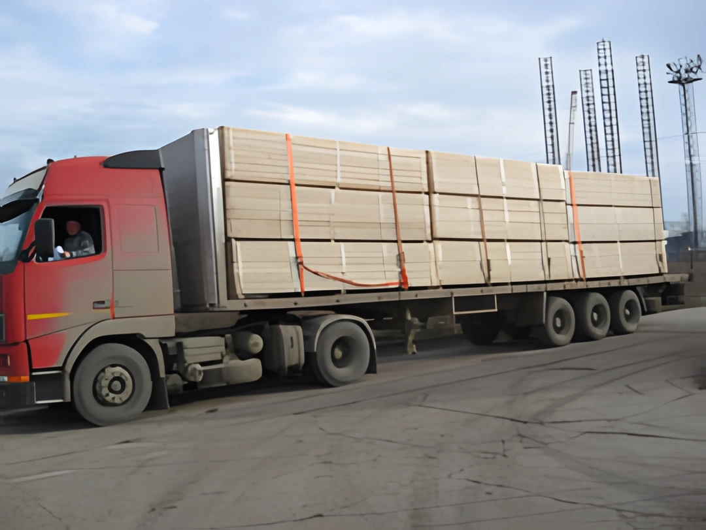

1994ÎNFIINȚARE
Compania începe activitatea la Constanța
IOANA TRADING SRL este înființată cu activitate principală în exportul de cherestea românească.
 IOANA TRADINGCONSTANȚA · ROMÂNIA
IOANA TRADINGCONSTANȚA · ROMÂNIA
03 / DESPRE COMPANIE
Înființată la Constanța în 1994, IOANA TRADING SRL are ca activitate principală exportul de cherestea românească. Istoricul companiei include exporturi către Spania, Italia, Iordania, Liban și Emiratele Arabe Unite.

REPERE DIN ISTORIC
IOANA TRADING SRL este înființată cu activitate principală în exportul de cherestea românească.
Primele exporturi descrise de companie au vizat elemente din lemn de plop pentru paleți, cu destinații în Spania și Italia.
Compania consemnează Iordania ca destinație a primului său export de cherestea românească către o piață arabă.
În 2008 sunt consemnate primele exporturi ale companiei către aceste două piețe.
Catalogul public al companiei cuprinde cinci sortimente de cherestea și produse din lemn pentru export.
GAMA PUBLICATĂ
Portofoliul prezentat de IOANA TRADING acoperă rășinoase, fag și elemente din plop pentru paleți.
Pentru construcții și în sortiment scurt.
Aburită și antiseptizată; aburită și uscată în uscător.
Elemente din lemn de plop pentru paleți.
Specificațiile publicate sunt repere de catalog; disponibilitatea și parametrii curenți se confirmă pentru fiecare ofertă.
Consultați sortimentele și specificațiile